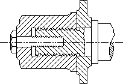

An application can draw the outline of a path by calling the StrokePath function, it can fill the interior of a path by calling the FillPath function, and it can both outline and fill the path by calling the StrokeAndFillPath function.
Whenever an application fills a path, the system uses the DC's current fill mode. An application can retrieve this mode by calling the GetPolyFillMode function, and it can set a new fill mode by calling the SetPolyFillMode function. For a description of the two fill modes, see Regions.
The following illustration shows the cross-section of an object created by a computer-aided design (CAD) application using paths that were both outlined and filled.

Â
Â